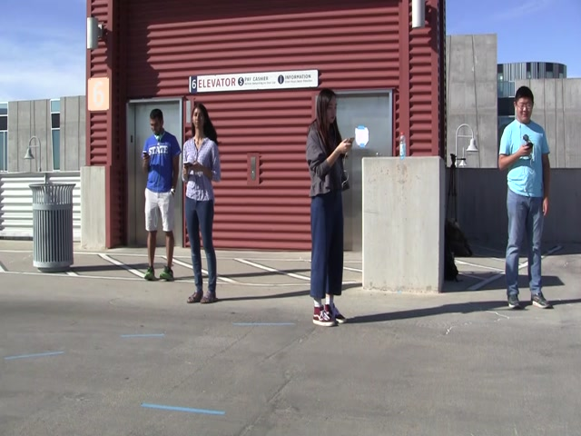

Stereo Gaze

This project deals with the development and testing of a Bayesian model for temporal scene inference. Given a video of a scene with people and objects the goal is to infer people's locations, their head pose, and also the locations of interesting objects in the scene.